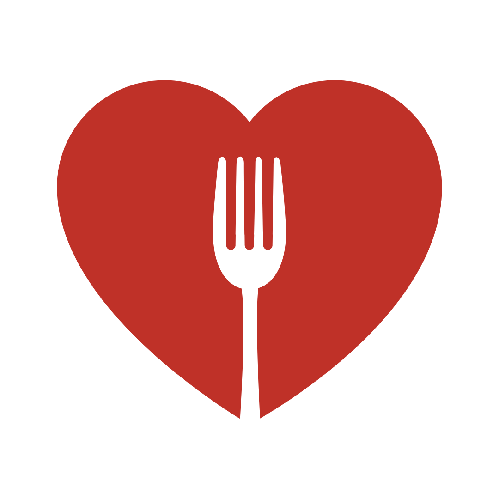

MISSION
The Night Market is an environmentally sustainable community-based initiative that recovers excess food, both cooked and non-perishable, and directly redistributes it in a stigma-free environment.
CORE VALUES
Environmental sustainability
we are committed to disengage from practices that harm our communities and our planet in order to work toward a healthier future for all
Inclusivity
we will not discriminate based on age, race, color, gender, gender expression, sexuality, ability or economic status in our activities. These include our food distribution events, where we will not require proof of need to participate
Equity and justice
We are committed to promoting food justice, environmental justice, social justice, and all other forms of justicein our communi dismantling the systems of oppression that drive inequity in our society
Community and collaboration
we integrate our organization and its activities into the local network of individuals, entities and agencies focused on mutual aid in our community. We will also share our knowledge freely in order to work together towards a more sustainable and equitable future
Learning and humility
we are committed to keeping our minds and hearts open and to engage in a constant learning/unlearning process to better take care of each other and our community
Working with joy
“All of our work for change can be rooted in the comfort and joy of being connected to one another, accompanying one another, and inspired by each other.”
(paraphrased from Mutual Aid, Dean Spade 2020)
GOALS
Overarching goal
Community-based food waste recovery and redistribution that can be replicated anywhere
The overarching aim of our organization is to ignite a movement of environmentally sustainable and inclusive food waste recovery and redistribution that can be replicated anywhere, empowering communities to close the gap between food waste and food insecurity.
Replicate this in your community
Check out our DIY tutorials and guidelines to get started with Night Market in your own community!!!
Local goals
1. Decrease food waste
2. Increase stigma-free food access
3. Promote environmental sustainability
4. Build and empower community
5. Bring awareness and educate about food waste, food insecurity and sustainability.
We lower the barriers involved in both food donation and collection, creating radically accessible community-level food redistribution networks. In contrast to other food recovery organizations, we do not require proof of need for community members to receive food donations, thus reducing social stigma and barriers associated with food access. The goal is to encourage people to view collecting excess food as a positive experience and to reduce the stigma around food insecurity, all while dramatically increasing access. The food recoveries we perform are as sustainable as possible as we use bike carts for cargo and transportation and compostable waxed carton boxes for packaging. In this way, we also bring environmental awareness to the issues associated with food waste and transportation. Operating at a hyperlocal scale, we are able to recover and quickly redistribute nutritious food that might be beneath the quantity threshold for larger organizations.